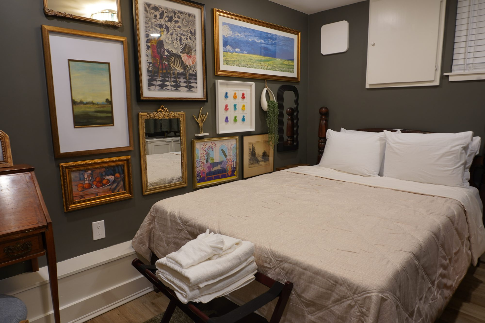

Whole historic houses for families, friends, couples and anyone traveling together, in Society Hill and Queen Village.
Every house is an entire home, so your group has the kitchen, the living room and the bedrooms to itself. Hancock and Catherine stand side by side, so up to 18 can stay together, depending on availability.

Treatment and recovery can mean weeks away from home. A whole house gives patients and their families space, a full kitchen and quiet residential streets, close to Pennsylvania Hospital, Wills Eye and Jefferson, and about ten minutes by car from Penn Medicine and CHOP.
Best fit: Rodman House for the shortest walks to the Center City hospitals, and Hancock House for free parking on repeat trips.
We are not a medical facility and provide no medical care, advice or transport.

Eagles, Phillies, 76ers and Flyers games are about ten minutes away by car, with the Union in Chester and college teams from Penn, Temple, Drexel, La Salle, Saint Joseph's and Villanova close by. A whole house gives a big group somewhere to gather before and after.
Best fit: Hancock and Catherine together sleep up to 18, with free parking at Hancock.

Reunions, milestone birthdays, anniversaries and graduation weekends are easier under one roof. Cook together in a full kitchen, then walk to dinner in Society Hill or Queen Village, with the University of Pennsylvania, Temple and Drexel a short ride away.
These are quiet residential homes, so we welcome relaxed gatherings, not parties or events.
Best fit: Hancock House for one big family, or Hancock and Catherine together for the whole clan.

Multi-family trips, friend groups, clubs and small teams can stay together without crowding. Each house has three bedrooms and two and a half baths, and Hancock and Catherine are next door to each other for groups of up to 18, depending on availability.
Best fit: Ask early for popular weekends: availability across two houses is the tight part.

Catherine House is made for friends who want to be near each other without being on top of each other: a bedroom and a bathroom on every floor. Outside, Fabric Row's vintage shops, thrift stores and coffee houses are 0.4 mi on foot, and South Street, Bella Vista and the Italian Market (0.8 mi) are close.
Best fit: Catherine House sleeps 8. Add Hancock next door for a bigger crew.

Room to spread out, and a very Philadelphia setting. Rodman House has a private rooftop deck with skyline views and a soaking tub in the primary bath. Catherine House has vaulted ceilings, exposed brick and a private fenced patio.
Dinner is the easy part: Provenance, Zahav, Royal Sushi & Izakaya and other celebrated restaurants are close, and the waterfront at Penn's Landing is a short walk.
Best fit: Rodman for skyline views, Catherine for a quiet patio.

Kitchens for easy meals, room for kids to spread out and a quiet residential block. Hancock House includes free parking, in-home laundry, a high chair and a pack 'n play, and Mario Lanza Park and Weccacoe Playground are nearby.
These are historic homes with steep stairs and no elevator, and Hancock House is not childproofed.
Best fit: Hancock House for families who are driving, and Rodman House for walks to Old City.
Please note: Every one of our houses is a multi-level historic home. Bedrooms and bathrooms are reached by steep, narrow stairs, and there is no elevator or step-free route. If anyone in your party has limited mobility or small children, ask us before you book.
Share your dates, your group and what brings you to Philadelphia, and we will check availability across the houses.